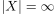
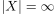
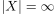

Kofinite Toploogie auf einer unendlichen Menge als zusammenhängender Raum
1. Satz
Sei  eine Menge mit 
Dann ist die kofinite topologie
eine Menge mit 
Dann ist die kofinite topologie  auf zusammenhängend
gdw unendlich ist - todo
auf zusammenhängend
gdw unendlich ist - todo
Sei eine Menge mit 
Dann ist die kofinite topologie auf zusammenhängend
gdw unendlich ist - todo